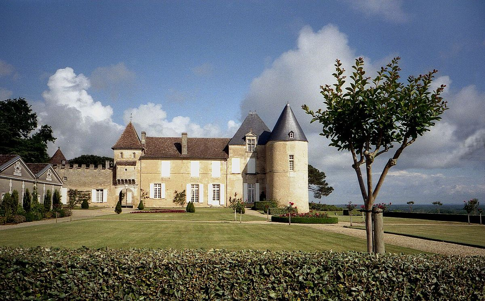

DULCE
La propiedad más célebre de Sauternes y único Premier Cru Supérieur de la clasificación de 1855, famosa por sus vinos dulces de uvas con podredumbre noble.

Château d’Yquem se alza sobre una colina en el término de Sauternes, al sur de Burdeos. En 1785, por matrimonio, la propiedad pasó a la familia Lur-Saluces, que la conservó durante más de dos siglos. En la clasificación de 1855 de los vinos blancos de Sauternes y Barsac fue el único en recibir la categoría de Premier Cru Supérieur. Desde 1999 pertenece mayoritariamente al grupo LVMH.
El viñedo está plantado con Sémillon, la variedad dominante, y Sauvignon Blanc. El microclima de la zona, con nieblas otoñales que se forman por la confluencia del Ciron y el Garona, favorece el desarrollo de la Botrytis cinerea, la podredumbre noble, que concentra los azúcares y los ácidos de las uvas.
La vendimia se hace a mano en varias pasadas sucesivas por el viñedo, seleccionando sólo los racimos o granos en el punto adecuado de botritización. El vino fermenta y se cría en barrica durante un largo periodo. En las añadas en que la calidad no se considera suficiente, el château no comercializa su vino.
Además del gran vino dulce, Yquem elabora un blanco seco, «Y» (Ygrec). Los vinos de Yquem son conocidos por su capacidad de envejecimiento, que puede prolongarse durante muchas décadas.
El viñedo de la propiedad forma una sola finca continua alrededor del château.